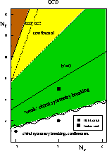
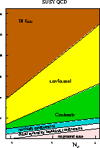
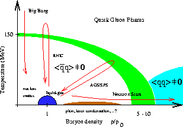

QCD Phase Transitions
November 4-7, 1998.
A RIKEN BNL Research Center Workshop
Brookhaven National Laboratory
Upton, NY, USA
|  |  |  |
The Workshop `QCD Phase Transitions' will be held at the RIKEN BNL Research Center, located at Brookhaven National Lab, from November 4 to 7, 1998.
The purpose of the workshop is to discuss the phase structure of QCD and related theories. We will focus on the phase transitions that are expected to occur as a function of temperature, chemical potential, the number (and masses) of flavors, and other parameters. We would like to review what is known from general arguments, analytical approaches, and the lattice, and discuss possible avenues for future research. Recent advances in unravelling the phase structure of supersymmetric gauge theories and the possible impliactions of these results for QCD will also be discussed. Finally, we would like to discuss the possible dynamical mechanisms common to some (or all) of these transitions.
The Workshop will consist of invited plenary talks, shorter talks by
participants, and discussion sessions on key topics.
Organizers: Thomas Schaefer (Seattle/Princeton) and Edward Shuryak (Stony Brook)
Plenary Speakers
To apply to the workshop, you can go to the online registration form or send the registration form to the RIKEN/BNL research center (rikenbnl@bnl.gov). You can also contact the organizers of the workshop at
Thomas Schaefer
School of Natural Sciences
Institute for Advanced Study
Olden Lane
Princeton, NJ 08540
(609) 734 8070
Edward Shuryak
Department of Physics
SUNY Stony Brook
Stony Brook, NY 11794
(516) 632 8127
Other information about travel, etc., is also available from the RIKEN
BNL Research Center home page for
"Workshops". You can also view a
postscript version of this announcement.
| Back to RIKEN BNL Research Center home page | last modified: september 9, 1998 |
| Back to Thomas Schaefer's home page |
{kind=link}
{kind=link}
{kind=link}